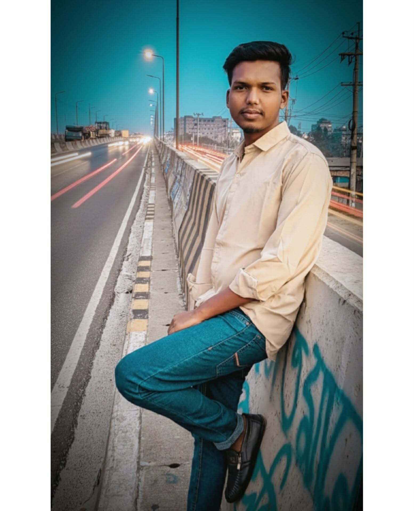

"হৃদয়ের ক্যানভাসে তুমিই শেষ রং..."
জন্মভূমি: কুড়িগ্রাম (Kurigram)
বর্তমান ঠিকানা: গাজীপুর (Gazipur)
"শুনো ডিয়ার, ভিড়ের মাঝে হারিয়ে যাওয়ার ছেলে আমি নই। যদি হাতটা শক্ত করে ধরতে পারো, তবে কথা দিলাম—চাঁদনী রাতে তোমার পাশে বসে সারা জীবন গল্প করে কাটাবো। ভালোবাসার রাজপ্রাসাদে শুধু রাজকন্যারই অভাব..."